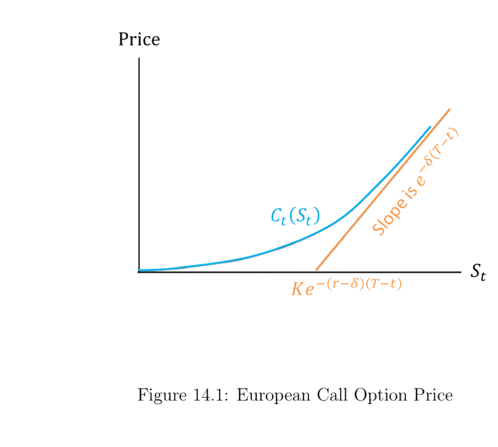

14. Option Pricing
本章在连续时间框架下推导期权定价。核心是欧式看涨期权的 Black-Scholes (BS) 公式，并用四种方法得到同一个 BS 偏微分方程 (PDE)：(1) 无套利自融资复制；(2) 风险中性测度 + Feynman-Kac；(3) CAPM (Constantinides 1978)；(4) 直接用变量替换把 PDE 化成热方程求解。随后讨论其他期权：看跌-看涨平价、美式看涨、欧式看跌、随机波动率与随机利率模型（Delta/Vega/Rho-中性对冲）、幂支付与彩虹期权。最后给出统一风险中性测度（因子模型 ⟺ SDF 等价、对所有股票统一的 \(\mathbf Q\)）与期权的 Beta 表示。
This chapter derives option pricing in continuous time. The centerpiece is the Black-Scholes (BS) formula for a European call, obtained by four routes that all yield the same BS partial differential equation (PDE): (1) no-arbitrage self-financing replication; (2) risk-neutral measure + Feynman-Kac; (3) CAPM (Constantinides 1978); (4) solving the PDE directly via a change of variables into the heat equation. We then treat other options: put-call parity, American call, European put, stochastic-volatility and stochastic-interest-rate models (Delta/Vega/Rho-neutral hedging), power-payoff and rainbow options. Finally we establish a uniform risk-neutral measure (factor-model ⟺ SDF equivalence, a single \(\mathbf Q\) for all stocks) and the beta representation of an option.
14.1 European Call Option
14.1.1 The Result
记号。 \(S_t\) 标的股价；\(K\) 行权（执行）价；\(r\) 连续无风险贴现率；\(\delta\) 连续股息率；\(\mu\) 股价漂移；\(\sigma\) 波动率；\(T\) 到期日。
假设。 股价 \(S_t\) 服从几何布朗运动 (14.1)：
Notation. \(S_t\) underlying stock price; \(K\) strike (exercise) price; \(r\) continuous risk-free discount rate; \(\delta\) continuous dividend rate; \(\mu\) stock-price drift; \(\sigma\) volatility; \(T\) exercise date.
Assumption. The stock price \(S_t\) follows a geometric Brownian motion (14.1):
$$dS_t=\mu S_t\,dt+\sigma S_t\,dB_t.\tag{14.1}$$
其中 \(\{B_t\}\) 是真实测度 \(\mathbf P\) 下的标准布朗运动。
结果。 设标的股息率为 \(\delta\)，则到期支付 \(\max\{S_T-K,0\}\) 的欧式看涨期权在 \(t\) 时的价格 \(C_t(S_t)\) 为 (14.2)：
where \(\{B_t\}\) is a standard Brownian motion under the real measure \(\mathbf P\).
Result. With dividend rate \(\delta\), the European call option with time-\(T\) payoff \(\max\{S_T-K,0\}\) has time-\(t\) price \(C_t(S_t)\) given by (14.2):
$$C_t(S_t)=e^{-\delta(T-t)}N(d_1)\,S_t-N(d_2)\,Ke^{-r(T-t)}\tag{14.2}$$
$$d_1=\frac{1}{\sigma\sqrt{T-t}}\left[\ln\frac{S_t}{K}+\left(r-\delta+\frac{\sigma^2}{2}\right)(T-t)\right]\tag{14.3}$$
$$d_2=d_1-\sigma\sqrt{T-t}\tag{14.4}$$
Remark 14.1. 若观察到欧式（或美式）看涨期权的市场价格，可反解 (14.2)–(14.4) 得到标的资产的隐含波动率 \(\sigma\)。
常用希腊字母。 其中 \(N(\cdot)\) 为标准正态 c.d.f.，\(N(d_1)=\frac{1}{\sqrt{2\pi}}\int_{-\infty}^{d_1}e^{-\frac12 z^2}dz\)。
Remark 14.1. If we observe the market price of a European (or American) call, we can invert (14.2)–(14.4) to back out the implied volatility \(\sigma\) of the underlying.
Frequently used Greeks. Here \(N(\cdot)\) is the standard normal c.d.f., \(N(d_1)=\frac{1}{\sqrt{2\pi}}\int_{-\infty}^{d_1}e^{-\frac12 z^2}dz\).
- Delta \(\Delta\equiv\dfrac{\partial C_t}{\partial S_t}\)，且 \(\Delta=e^{-\delta(T-t)}N(d_1)\) 是精确结果（非近似），证明见下。
- Gamma \(\Gamma\equiv\dfrac{\partial^2 C_t}{(\partial S_t)^2}\)，又称凸性 (convexity)。
- Theta \(\theta\equiv\dfrac{\partial C_t}{\partial t}\)。
- Vega \(v\equiv\dfrac{\partial C_t}{\partial\sigma}\)。
- Rho \(\rho\equiv\dfrac{\partial C_t}{\partial r}\)。
- Delta \(\Delta\equiv\dfrac{\partial C_t}{\partial S_t}\), and \(\Delta=e^{-\delta(T-t)}N(d_1)\) is an exact result (not an approximation); proof below.
- Gamma \(\Gamma\equiv\dfrac{\partial^2 C_t}{(\partial S_t)^2}\), also called convexity.
- Theta \(\theta\equiv\dfrac{\partial C_t}{\partial t}\).
- Vega \(v\equiv\dfrac{\partial C_t}{\partial\sigma}\).
- Rho \(\rho\equiv\dfrac{\partial C_t}{\partial r}\).
证明 / Proof：\(\Delta=e^{-\delta(T-t)}N(d_1)\)
对 (14.2) 用链式法则求 \(\partial C_t/\partial S_t\)。关键是 \(S_t\) 通过 \(N(d_1),N(d_2)\) 出现的项相互抵消。利用 \(\dfrac{\partial d_1}{\partial S_t}=\dfrac{\partial d_2}{\partial S_t}=\dfrac{1}{S_t\sigma\sqrt{T-t}}\) 与正态密度 \(\dfrac{1}{\sqrt{2\pi}}e^{-\frac12 d^2}\)，以及由 (14.3)/(14.4) 可得的恒等式
Differentiate (14.2) with the chain rule. The key is that the terms through which \(S_t\) enters \(N(d_1),N(d_2)\) cancel. Using \(\dfrac{\partial d_1}{\partial S_t}=\dfrac{\partial d_2}{\partial S_t}=\dfrac{1}{S_t\sigma\sqrt{T-t}}\) and the normal density \(\dfrac{1}{\sqrt{2\pi}}e^{-\frac12 d^2}\), together with the identity implied by (14.3)/(14.4)
$$e^{-\frac12 d_2^2}=e^{-\frac12 d_1^2}\,e^{d_1\sigma\sqrt{T-t}-\frac12\sigma^2(T-t)}=e^{-\frac12 d_1^2}\,e^{(r-\delta)(T-t)}\frac{S_t}{K},$$
代入后两条密度项的系数化为 \(e^{-\delta(T-t)}\dfrac{1}{\sqrt{2\pi}}e^{-\frac12 d_1^2}\dfrac{1}{\sigma\sqrt{T-t}}\left(1-\dfrac{S_t}{K}\dfrac{K}{S_t}\right)=0\)，故
after substitution the two density terms collapse to \(e^{-\delta(T-t)}\dfrac{1}{\sqrt{2\pi}}e^{-\frac12 d_1^2}\dfrac{1}{\sigma\sqrt{T-t}}\left(1-\dfrac{S_t}{K}\dfrac{K}{S_t}\right)=0\), hence
$$\Delta=e^{-\delta(T-t)}N(d_1).\qquad\blacksquare$$
期权价格 \(C_t(S_t)\) 随 \(S_t\) 的形状见 Figure 14.1。
The shape of the option price \(C_t(S_t)\) in \(S_t\) is shown in Figure 14.1.

图 14.1：欧式看涨期权价格。曲线 \(C_t(S_t)\) 凸向上；当 \(S_t\to\infty\) 时趋于斜率为 \(e^{-\delta(T-t)}\) 的渐近线，因为 \(\lim_{S_t\to\infty}\Delta=e^{-\delta(T-t)}\underbrace{N(d_1)}_{\to 1}\)。该渐近线与横轴的交点 \(A\) 由 \(N(d_1)=N(d_2)=1\) 代入 (14.2) 并令 \(C_t(S_t)=0\) 求得，即 \(S_t=Ke^{-(r-\delta)(T-t)}\)。
Figure 14.1: European call option price. The curve \(C_t(S_t)\) is convex; as \(S_t\to\infty\) it approaches an asymptote with slope \(e^{-\delta(T-t)}\), because \(\lim_{S_t\to\infty}\Delta=e^{-\delta(T-t)}\underbrace{N(d_1)}_{\to 1}\). The asymptote crosses the horizontal axis at the point \(A\) found by setting \(N(d_1)=N(d_2)=1\) in (14.2) and \(C_t(S_t)=0\), i.e. \(S_t=Ke^{-(r-\delta)(T-t)}\).
求渐近交点 \(A\)：\(e^{-\delta(T-t)}S_t-Ke^{-r(T-t)}=0\ \Rightarrow\ S_t=Ke^{-(r-\delta)(T-t)}\)，并用到 Leibniz 积分法则 (14.5)：
For the asymptote intercept \(A\): \(e^{-\delta(T-t)}S_t-Ke^{-r(T-t)}=0\ \Rightarrow\ S_t=Ke^{-(r-\delta)(T-t)}\), using the Leibniz integral rule (14.5):
$$\frac{d}{dx}\left(\int_{a(x)}^{b(x)}f(x,t)\,dt\right)=f(x,b(x))\frac{db(x)}{dx}-f(x,a(x))\frac{da(x)}{dx}+\int_{a(x)}^{b(x)}\frac{\partial f(x,t)}{\partial x}\,dt.\tag{14.5}$$
14.1.2 BS PDE via No-Arbitrage
三种方法都给出同一个 Black-Scholes PDE (14.6)：
All three routes yield the same Black-Scholes PDE (14.6):
$$\frac{\partial C_t(S_t)}{\partial t}=C_t(S_t)\,r-(r-\delta)\,S_t\frac{\partial C_t(S_t)}{\partial S_t}-\frac12\sigma^2 S_t^2\frac{\partial^2 C_t(S_t)}{(\partial S_t)^2}.\tag{14.6}$$
Remark 14.2. (14.6) 对任何写在股价 \(S_t\) 上、其一阶与二阶导数良定义的衍生品都成立；不同期权只是边界条件（\(t=T\) 处）不同。
第一种方法：无套利复制。 \(C_t(S_t)\) 可用一个动态交易的"无风险债券（借/贷）+ 标的股票"组合复制。见 Table 14.1 的交易策略。
Remark 14.2. (14.6) holds for any derivative written on \(S_t\) whose first and second derivatives w.r.t. the stock price are well-defined; different options differ only in the boundary condition (at \(t=T\)).
Route 1: no-arbitrage replication. \(C_t(S_t)\) can be replicated by a dynamically traded portfolio of "risk-free bond (lend/borrow) + underlying stock." See Table 14.1 for the trading strategy.
Table 14.1：复制欧式看涨期权
| \(t\) 时操作 | \(t\) 时现金流 | \(t+dt\) 时现金流 |
|---|---|---|
| 多 1 份看涨期权 | \(-C_t\) | \(C_t+dC_t\) |
| 空 \(\frac{\partial C_t}{\partial S_t}\) 股股票 | \(S_t\frac{\partial C_t}{\partial S_t}\) | \(-\frac{\partial C_t}{\partial S_t}(S_t+dS_t+\delta S_t dt)\) |
| 其余以 \(r\) 借贷 | \(-\left(S_t\frac{\partial C_t}{\partial S_t}-C_t\right)\) | \(\left(S_t\frac{\partial C_t}{\partial S_t}-C_t\right)(1+r\,dt)\) |
| 净额 | \(0\) | 记为 \(f_t\) |
Table 14.1: Replicating European Call Option
| Action at \(t\) | Inflow at \(t\) | Inflow at \(t+dt\) |
|---|---|---|
| Long 1 call option | \(-C_t\) | \(C_t+dC_t\) |
| Short \(\frac{\partial C_t}{\partial S_t}\) shares of stock | \(S_t\frac{\partial C_t}{\partial S_t}\) | \(-\frac{\partial C_t}{\partial S_t}(S_t+dS_t+\delta S_t dt)\) |
| Lend the rest at rate \(r\) | \(-\left(S_t\frac{\partial C_t}{\partial S_t}-C_t\right)\) | \(\left(S_t\frac{\partial C_t}{\partial S_t}-C_t\right)(1+r\,dt)\) |
| Net total | \(0\) | Denoted by \(f_t\) |
\(t\) 时净流入为零（零成本组合）。把第三列加总得 \(f_t\) (14.7)：
The net inflow at \(t\) is zero (zero-cost portfolio). Summing the third column gives \(f_t\) (14.7):
$$f_t=dC_t-\frac{\partial C_t}{\partial S_t}\,dS_t-\frac{\partial C_t}{\partial S_t}\delta S_t\,dt+S_t\frac{\partial C_t}{\partial S_t}r\,dt-C_t r\,dt.\tag{14.7}$$
由 Itô 公式（He 2019d 的公式 3）：对标准布朗运动 \(dX_t=R_t dt+A_t dB_t\)，有 (14.8)：
By Itô's formula (formula 3 in He 2019d): for \(dX_t=R_t dt+A_t dB_t\), (14.8):
$$df(t,X_t)=\left(\dot f(t,X_t)+\frac12 A_t^2 f''(t,X_t)\right)dt+f'(t,X_t)\,dX_t.\tag{14.8}$$
由 (14.1) 与 (14.8)，(14.9)：
By (14.1) and (14.8), (14.9):
$$dC_t=\left(\frac{\partial C_t}{\partial t}+\frac12\sigma^2 S_t^2\frac{\partial^2 C_t(S_t)}{(\partial S_t)^2}\right)dt+\frac{\partial C_t}{\partial S_t}\,dS_t.\tag{14.9}$$
把 (14.9) 代入 (14.7)：随机项 \(dS_t\) 抵消，组合无风险；零成本无套利要求 \(f_t=0\) (14.10)：
Substituting (14.9) into (14.7): the random term \(dS_t\) cancels, the portfolio is riskless; the zero-cost no-arbitrage condition forces \(f_t=0\) (14.10):
$$0=\frac{\partial C_t}{\partial t}+\frac12\sigma^2 S_t^2\frac{\partial^2 C_t(S_t)}{(\partial S_t)^2}+S_t\frac{\partial C_t}{\partial S_t}(r-\delta)-C_t r,\tag{14.10}$$
整理即得 BS PDE (14.6)。
which rearranges to the BS PDE (14.6).
14.1.3 BS PDE via Risk-Neutral Measure
第二种方法：风险中性测度。 把真实测度 \(\mathbf P\) 换成风险中性测度 \(\mathbf Q\)，再用 Feynman-Kac 公式得到 (14.6)。
Remark 14.3. 在 \(\mathbf Q\) 下，\(C_t=\mathbb E_{\mathbf Q}\!\left[e^{-r(T-t)}\max\{S_T-K,0\}\mid\mathcal F_t\right]\)：期权到期支付用无风险利率贴现，并在风险中性测度下取期望。
构造 \(\mathbf Q\) (Girsanov / Adding Drift). 令 \(dM_t=mM_t\,dB_t\)（\(\{B_t\}\) 为 \(\mathbf P\) 下标准布朗运动），定义测度 \(\mathbf Q\) (14.11)：
Route 2: risk-neutral measure. Change from \(\mathbf P\) to the risk-neutral measure \(\mathbf Q\), then invoke Feynman-Kac to obtain (14.6).
Remark 14.3. Under \(\mathbf Q\), \(C_t=\mathbb E_{\mathbf Q}\!\left[e^{-r(T-t)}\max\{S_T-K,0\}\mid\mathcal F_t\right]\): the terminal payoff is discounted at the risk-free rate and expectation is taken under the risk-neutral measure.
Constructing \(\mathbf Q\) (Girsanov / Adding Drift). Let \(dM_t=mM_t\,dB_t\) (\(\{B_t\}\) standard BM under \(\mathbf P\)), and define \(\mathbf Q\) by (14.11):
$$d\mathbf Q=M_t\,d\mathbf P.\tag{14.11}$$
则 \(\{W_t\}\) 为 \(\mathbf Q\) 下标准布朗运动，且 (14.12)：
Then \(\{W_t\}\) is standard BM under \(\mathbf Q\), with (14.12):
$$dW_t=dB_t-m\,dt.\tag{14.12}$$
真实测度下 \(dS_t=\mu S_t\,dt+\sigma S_t\,dB_t\) (14.13)。选取 (14.14)：
Under \(\mathbf P\), \(dS_t=\mu S_t\,dt+\sigma S_t\,dB_t\) (14.13). Choose (14.14):
$$m=\frac{r-\delta-\mu}{\sigma}\tag{14.14}$$
代入 (14.13)，反向工程出 (14.15)：
Substituting into (14.13) reverse-engineers (14.15):
$$dS_t=(r-\delta)S_t\,dt+\sigma S_t\,dW_t.\tag{14.15}$$
即在 \(\mathbf Q\) 下 \(\{S_t\}\) 仍是扩散过程，但漂移由 \(\mu\) 变成 \(r-\delta\)。
构造 SDF \(\Lambda^{\mathbf H}_t\)。 在任意测度 \(\mathbf H\) 下令 (此 SDF 为人工构造，不声称唯一)
i.e. under \(\mathbf Q\), \(\{S_t\}\) is still a diffusion but with drift \(r-\delta\) instead of \(\mu\).
Construct an SDF \(\Lambda^{\mathbf H}_t\). Under an arbitrary measure \(\mathbf H\) define (this SDF is artificial; no uniqueness is claimed)
$$\frac{d\Lambda^{\mathbf H}_t}{\Lambda^{\mathbf H}_t}=-r\,dt+\frac{r-\mu^{\mathbf H}-\delta}{\sigma}\,dB^{\mathbf H}_t,$$
其中 \(\mu^{\mathbf H}\) 为 \(\mathbf H\) 下股价漂移，\(\{B^{\mathbf H}_t\}\) 为 \(\mathbf H\) 下标准布朗运动。要证 \(\Lambda^{\mathbf H}_t\) 是给股票定价的有效 SDF，只需 (14.16)：
where \(\mu^{\mathbf H}\) is the drift under \(\mathbf H\) and \(\{B^{\mathbf H}_t\}\) is standard BM under \(\mathbf H\). To show \(\Lambda^{\mathbf H}_t\) is a valid SDF pricing the stock, it suffices that (14.16):
$$S_t\Lambda^{\mathbf H}_t=\mathbb E_t^{\mathbf H}\!\left[\int_0^\infty\Lambda^{\mathbf H}_{t+s}D_{t+s}\,ds\right].\tag{14.16}$$
由 §1.3.3，(14.16) 等价于 (14.17)：
By §1.3.3, (14.16) is equivalent to (14.17):
$$0=\frac{D_t}{S_t}dt+\mathbb E_t^{\mathbf H}\!\left[\frac{d\Lambda^{\mathbf H}_t}{\Lambda^{\mathbf H}_t}+\frac{dS_t}{S_t}+\left(\frac{dS_t}{S_t}\right)\!\left(\frac{d\Lambda^{\mathbf H}_t}{\Lambda^{\mathbf H}_t}\right)\right].\tag{14.17}$$
分别对无风险资产（\(D_t/S_t=r\)、\(S_t=1\)）与股票（\(dS_t=\mu^{\mathbf H}S_t dt+\sigma S_t dB^{\mathbf H}_t\)）验证 (14.17) 均成立，故 (14.18)：
Verifying (14.17) for both the risk-free asset (\(D_t/S_t=r\), \(S_t=1\)) and the stock (\(dS_t=\mu^{\mathbf H}S_t dt+\sigma S_t dB^{\mathbf H}_t\)) shows it holds, so (14.18):
$$\frac{d\Lambda^{\mathbf H}_t}{\Lambda^{\mathbf H}_t}=-r\,dt+\frac{r-\mu^{\mathbf H}-\delta}{\sigma}\,dB^{\mathbf H}_t\tag{14.18}$$
是在任意 \(\mathbf H\) 下给股票与无风险资产定价的有效连续 SDF。
特例：\(\mathbf Q\) 下 SDF 退化为 \(e^{-rt}\)。 取 \(\mu^{\mathbf Q}=r-\delta\)、\(dB^{\mathbf Q}_t=dW_t\) 代入 (14.18)：
is a valid continuous SDF pricing the stock and the risk-free asset under any \(\mathbf H\).
Special case: under \(\mathbf Q\) the SDF degenerates to \(e^{-rt}\). Plug \(\mu^{\mathbf Q}=r-\delta\), \(dB^{\mathbf Q}_t=dW_t\) into (14.18):
$$\frac{d\Lambda^{\mathbf Q}_t}{\Lambda^{\mathbf Q}_t}=-r\,dt\quad\Rightarrow\quad\Lambda^{\mathbf Q}_t=e^{-rt},$$
故可用无风险利率 \(r\) 在 \(\mathbf Q\) 下贴现风险现金流——这正是称 \(\mathbf Q\) 为风险中性测度的原因。
复制与定价。 欧式看涨期权可由 \(\frac{\partial C_t}{\partial S_t}\) 股股票加 \(\frac1r\left[\frac{\partial C_t}{\partial t}+\frac12\sigma^2 S_t^2\frac{\partial^2 C_t}{(\partial S_t)^2}\right]\) 单位无风险债券复制；既然 \(\Lambda^{\mathbf H}\) 给二者定价，也给其线性组合 \(C_t\) 定价 (14.21)：
so risk-free \(r\) discounts risky cash flow under \(\mathbf Q\) — exactly why \(\mathbf Q\) is the risk-neutral measure.
Replication and pricing. The call is replicated by \(\frac{\partial C_t}{\partial S_t}\) shares plus \(\frac1r\left[\frac{\partial C_t}{\partial t}+\frac12\sigma^2 S_t^2\frac{\partial^2 C_t}{(\partial S_t)^2}\right]\) units of risk-free bond; since \(\Lambda^{\mathbf H}\) prices both, it prices the linear combination \(C_t\) (14.21):
$$C_t(S_t)=\mathbb E_t^{\mathbf H}\!\left[\frac{\Lambda^{\mathbf H}_T}{\Lambda^{\mathbf H}_t}F(S_T)\right],\qquad F(S_T)=\max\{S_T-K,0\}.\tag{14.21}$$
取 \(\mathbf H=\mathbf Q\)（\(\Lambda^{\mathbf Q}_t=e^{-rt}\)）得 (14.22)：
Setting \(\mathbf H=\mathbf Q\) (\(\Lambda^{\mathbf Q}_t=e^{-rt}\)) gives (14.22):
$$C_t(S_t)=\mathbb E_t^{\mathbf Q}\!\left[e^{-r(T-t)}F(S_T)\right].\tag{14.22}$$
(14.22) 也给出蒙特卡洛定价法：在 \(\mathbf Q\) 下用 \(dS_t=(r-\delta)S_t dt+\sigma S_t dW^{\mathbf Q}_t\) 模拟大量 \(S_T\) 路径，对 \(F(S_T)\) 取平均再乘 \(e^{-r(T-t)}\)。
Feynman-Kac. 满足 (14.22) 的 \(C_t(S_t)\) 必满足
(14.22) also yields a Monte Carlo method: under \(\mathbf Q\) simulate many \(S_T\) paths via \(dS_t=(r-\delta)S_t dt+\sigma S_t dW^{\mathbf Q}_t\), average \(F(S_T)\), and multiply by \(e^{-r(T-t)}\).
Feynman-Kac. Any \(C_t(S_t)\) satisfying (14.22) must also satisfy
$$\frac{\partial C_t}{\partial t}+\frac12\sigma^2 S_t^2\frac{\partial^2 C_t(S_t)}{(\partial S_t)^2}+\frac{\partial C_t}{\partial S_t}(r-\delta)S_t-C_t r=0,$$
正是 BS PDE (14.6)。
不用 Feynman-Kac 的替代推导。 用风险中性测度的性质 \(C_t=\mathbb E_t^{\mathbf Q}[e^{-r\,dt}(C_t+dC_t)]\)，泰勒展开 \(e^{-r\,dt}\approx 1-r\,dt\) 得 (14.23)：
which is exactly the BS PDE (14.6).
Alternative derivation without Feynman-Kac. Using the risk-neutral property \(C_t=\mathbb E_t^{\mathbf Q}[e^{-r\,dt}(C_t+dC_t)]\) and the Taylor expansion \(e^{-r\,dt}\approx 1-r\,dt\) gives (14.23):
$$r\,dt=\mathbb E_t^{\mathbf Q}\!\left[\frac{dC_t}{C_t}\right].\tag{14.23}$$
由 (14.20) 在 \(\mathbf Q\) 下（\(dS_t=(r-\delta)S_t dt+\sigma S_t dW_t\)）取期望，得 (14.24)：
Taking the \(\mathbf Q\)-expectation of (14.20) under \(dS_t=(r-\delta)S_t dt+\sigma S_t dW_t\) gives (14.24):
$$\mathbb E_t^{\mathbf Q}[dC_t(S_t)]=\left[\frac{\partial C_t(S_t)}{\partial t}+\frac{\partial C_t(S_t)}{\partial S_t}(r-\delta)S_t+\frac12\sigma^2 S_t^2\frac{\partial^2 C_t(S_t)}{(\partial S_t)^2}\right]dt.\tag{14.24}$$
把 (14.24) 代入 \(rC_t\,dt=\mathbb E_t^{\mathbf Q}[dC_t]\) 即得 BS PDE (14.6)。
Substituting (14.24) into \(rC_t\,dt=\mathbb E_t^{\mathbf Q}[dC_t]\) gives the BS PDE (14.6).
14.1.4 BS PDE via CAPM: Constantinides (1978)
第三种方法：假设 CAPM 对所有可交易资产（含期权）成立。 设期权写在某标的对象 \(x(t)\) 上（\(x(t)\) 可交易或不可交易，例如"芝加哥的气温"），价格 \(V(x,t)\)。设 (14.25)：
Route 3: assume CAPM holds for all traded assets (including the option). Let the option be written on an underlying object \(x(t)\) (tradable or not, e.g. "the temperature of Chicago"), with price \(V(x,t)\). Assume (14.25):
$$\frac{dx(t)}{x(t)}=\mu\,dt+\sigma\,dZ(t),\qquad\frac{dP_M(t)}{P_M(t)}=\mu_M\,dt+\sigma_M\,dZ_M(t),\quad \mathbb E[dZ\,dZ_M]=\rho\,dt.\tag{14.25}$$
期权股息率为 \(\delta\)（\([t,t+dt]\) 内派息 \(\delta V\,dt\)）。记 \(V_t,V_x,V_{xx}\) 为相应偏导。由 Itô (14.26)：
The option's dividend rate is \(\delta\) (payment \(\delta V\,dt\) over \([t,t+dt]\)). Write \(V_t,V_x,V_{xx}\) for the partials. By Itô (14.26):
$$\frac{dV+\delta V\,dt}{V}=\frac{1}{V}\left(\delta V+V_t+\mu xV_x+\frac12\sigma^2 x^2 V_{xx}\right)dt+\frac{1}{V}\sigma xV_x\,dZ\ \equiv\ r_V\,dt.\tag{14.26}$$
$$\mathbb E_t[r_V]=\frac{1}{V}\left(\delta V+V_t+\mu xV_x+\frac12\sigma^2 x^2 V_{xx}\right)dt.\tag{14.27}$$
由 (14.26)、(14.25) 算出协方差与方差，定义期权的市场 beta (14.28)：
Computing covariance and variance from (14.26), (14.25), define the option's market beta (14.28):
$$\beta_V\equiv\frac{\mathrm{Cov}\!\left(r_V\,dt,\frac{dP_M(t)}{P_M(t)}\right)}{\mathrm{Var}\!\left(\frac{dP_M(t)}{P_M(t)}\right)}=\frac{\frac1V\sigma xV_x\sigma_M\rho}{\sigma_M^2}=\frac{\sigma xV_x\rho}{\sigma_M V}.\tag{14.28}$$
设 CAPM 对期权成立 \(\mathbb E_t[r_V]-r\,dt=\beta_V\big(\mathbb E_t[\frac{dP_M}{P_M}]-r\,dt\big)\)，代入 (14.27)、(14.28) 整理得 (14.29)：
Imposing CAPM on the option, \(\mathbb E_t[r_V]-r\,dt=\beta_V\big(\mathbb E_t[\frac{dP_M}{P_M}]-r\,dt\big)\), and substituting (14.27), (14.28) yields (14.29):
$$\delta V+V_t+\left[\mu-\frac{\sigma\rho}{\sigma_M}(\mu_M-r)\right]xV_x+\frac12\sigma^2 V_{xx}-rV=0.\tag{14.29}$$
期权零股息 \(\delta=0\)，重写 (14.30)：
With zero option dividend \(\delta=0\), rewrite as (14.30):
$$V_t=rV-\mu^\star x V_x-\frac12\sigma^2 V_{xx},\qquad \mu^\star\equiv\mu-\frac{\sigma\rho}{\sigma_M}(\mu_M-r).\tag{14.30}$$
若标的 \(x\) 可交易（以 \(x(t)\) 为除息价、股息率 \(m\)），对 \(x\) 套用风险溢价关系可证 \(\mu^\star=r\)（与风险中性定价一致，见 §14.1.3），代入 (14.30) 得 (14.31)：
If the underlying \(x\) is tradable (with \(x(t)\) the ex-dividend price and dividend rate \(m\)), applying the risk-premium relation to \(x\) shows \(\mu^\star=r\) (consistent with risk-neutral pricing, §14.1.3); substituting into (14.30) gives (14.31):
$$V_t=rV-rxV_x-\frac12\sigma^2 V_{xx},\tag{14.31}$$
正是 BS PDE (14.6)（零股息）。这里隐含假设标的 \(x\) 零股息，是 (14.31) 与 (14.6) 唯一差别的来源。
which is the BS PDE (14.6) (zero dividend). The implicit zero-dividend assumption on \(x\) is the only source of difference between (14.31) and (14.6).
14.1.5 Solve the Black-Scholes Equation (PDE)
第四种方法：直接解 PDE。 从 (14.6) 出发，记 \(x\equiv S_t\)、\(\phi(t,x)\equiv C_t\)、\(m\equiv r-\delta\)、\(\tau\equiv T-t\)。改写为
Route 4: solve the PDE directly. Starting from (14.6), write \(x\equiv S_t\), \(\phi(t,x)\equiv C_t\), \(m\equiv r-\delta\), \(\tau\equiv T-t\). Rewrite as
$$\dot\phi(t,x)=\phi(t,x)r-mx\phi'(t,x)-\frac12\sigma^2 x^2\phi''(t,x),$$
边界条件 \(\phi(T,x)=(x-K)_+\)。换元 \(\tau=T-t\) 得 (14.32)：
with boundary condition \(\phi(T,x)=(x-K)_+\). With \(\tau=T-t\) (14.32):
$$\frac{\partial\phi(T-\tau,x)}{\partial\tau}=-\phi(t,x)r+mx\phi'(t,x)+\frac12\sigma^2 x^2\phi''(t,x).\tag{14.32}$$
再换元 \(y=\ln x\)（\(x=e^y\)），由 (14.33)、(14.34) 得到关于 \(y\) 的常系数 PDE (14.35)：
Next set \(y=\ln x\) (\(x=e^y\)); via (14.33), (14.34) this gives a constant-coefficient PDE in \(y\) (14.35):
$$\frac{\partial\phi}{\partial\tau}=\underbrace{\frac12\sigma^2}_{\equiv A}\frac{\partial^2\phi}{\partial y^2}+\underbrace{\left(m-\frac12\sigma^2\right)}_{\equiv B}\frac{\partial\phi}{\partial y}+\underbrace{(-r)}_{\equiv C}\phi.\tag{14.35}$$
证明 / Proof：化为标准热方程并求解
定义新变量 \(h=e^{\alpha y+\beta\tau}\phi\) (14.36)，即 \(\phi=e^{-\alpha y-\beta\tau}h\) (14.37)。代入 (14.35) 得 (14.41)：
Define \(h=e^{\alpha y+\beta\tau}\phi\) (14.36), i.e. \(\phi=e^{-\alpha y-\beta\tau}h\) (14.37). Substituting into (14.35) gives (14.41):
$$\frac{\partial h}{\partial\tau}=A\frac{\partial^2 h}{\partial y^2}+(-2\alpha A+B)\frac{\partial h}{\partial y}+(-B\alpha+C+A\alpha^2+\beta)h.\tag{14.41}$$
选 \(\alpha=\frac{B}{2A}\)（消去一阶项）、\(\beta=\frac{B^2}{4A}-C\)（消去零阶项），(14.41) 化为标准热方程 (14.42)：
Choosing \(\alpha=\frac{B}{2A}\) (kills the first-order term) and \(\beta=\frac{B^2}{4A}-C\) (kills the zeroth-order term), (14.41) becomes the standard heat equation (14.42):
$$\frac{\partial h}{\partial\tau}=A\frac{\partial^2 h}{\partial y^2}.\tag{14.42}$$
热方程的一般解 (14.43)，其核为 \(\mathcal N(y,2A\tau)\) 的密度，故 \(h=\mathbb E_z[g(z)]\)，\(z\sim\mathcal N(y,2A\tau)\)，且 \(\lim_{\tau\to0}h(\tau,y)=g(y)\) (14.46)：
The general heat-equation solution (14.43) has kernel equal to the density of \(\mathcal N(y,2A\tau)\), so \(h=\mathbb E_z[g(z)]\) with \(z\sim\mathcal N(y,2A\tau)\), and \(\lim_{\tau\to0}h(\tau,y)=g(y)\) (14.46):
$$h=\frac{1}{\sqrt{4\pi A\tau}}\int_{-\infty}^\infty g(z)\,e^{-\frac{(y-z)^2}{4A\tau}}\,dz.\tag{14.43}$$
由初始（\(\tau\to0\)）边界 \(\phi(T,x)=\max\{e^y-K,0\}\equiv f(y)\)，并由 (14.37) 得 \(g(y)=e^{\alpha y}f(y)\)。代回 (14.43) 并配方，最终由 (14.47) 得 (14.48)：
From the \(\tau\to0\) boundary \(\phi(T,x)=\max\{e^y-K,0\}\equiv f(y)\) and (14.37), \(g(y)=e^{\alpha y}f(y)\). Substituting back into (14.43) and completing the square, (14.47) leads to (14.48):
$$\phi(t,x)=e^{-r(T-t)}\underbrace{\frac{1}{\sqrt{2\pi\sigma^2(T-t)}}\int_{\ln K}^\infty e^z e^{-\frac{[z-\ln x-(m-\frac12\sigma^2)(T-t)]^2}{2\sigma^2(T-t)}}dz}_{\text{Part 1}}-Ke^{-r(T-t)}\underbrace{\frac{1}{\sqrt{2\pi\sigma^2(T-t)}}\int_{\ln K}^\infty e^{-\frac{[z-\ln x-(m-\frac12\sigma^2)(T-t)]^2}{2\sigma^2(T-t)}}dz}_{\text{Part 2}}.\tag{14.48}$$
Lemma 14.1. 设 \(N_1\) 为 \(z\sim\mathcal N(\mu,\sigma^2)\) 的 c.d.f.，\(N_0\) 为 \(\mathcal N(0,1)\) 的 c.d.f.，则 \(N_1(q)=N_0\!\left(\frac{q-\mu}{\sigma}\right)\)。
用 Lemma 14.1，Part 1 中 \(z\) 服从 \(\mathcal N(\ln x+(m+\frac12\sigma^2)(T-t),\sigma^2(T-t))\)，得 (14.49)；Part 2 中 \(z\) 服从 \(\mathcal N(\ln x+(m-\frac12\sigma^2)(T-t),\sigma^2(T-t))\)，得 (14.50)：
Lemma 14.1. If \(N_1\) is the c.d.f. of \(z\sim\mathcal N(\mu,\sigma^2)\) and \(N_0\) that of \(\mathcal N(0,1)\), then \(N_1(q)=N_0\!\left(\frac{q-\mu}{\sigma}\right)\).
By Lemma 14.1, in Part 1 \(z\sim\mathcal N(\ln x+(m+\frac12\sigma^2)(T-t),\sigma^2(T-t))\) giving (14.49); in Part 2 \(z\sim\mathcal N(\ln x+(m-\frac12\sigma^2)(T-t),\sigma^2(T-t))\) giving (14.50):
$$\text{Part 1}=xe^{m(T-t)}N_0(d_1)\tag{14.49}$$
$$\text{Part 2}=N_0(d_2)\tag{14.50}$$
代入 \(m=r-\delta\)、(14.49)、(14.50) 入 (14.48)：
Substituting \(m=r-\delta\), (14.49), (14.50) into (14.48):
$$\phi(t,x)=e^{-\delta(T-t)}N_0(d_1)\,x-N_0(d_2)\,Ke^{-r(T-t)},$$
恰为 BS 公式 (14.2)，其中 \(d_1,d_2\) 同 (14.3)、(14.4)。\(\blacksquare\)
which is exactly the BS formula (14.2), with \(d_1,d_2\) as in (14.3), (14.4). \(\blacksquare\)
14.2 Other Options
14.2.1 Put-Call Parity
零股息下，多 1 份欧式看涨 + 空 1 份欧式看跌，与"买 1 股股票 + 卖出 \(e^{-r(T-t)}K\) 的无风险债券"现金流相同。由无套利得看跌-看涨平价 (14.51)：
Under zero dividend, longing one European call and shorting one European put generates the same cash flow as buying one share and selling \(e^{-r(T-t)}K\) of risk-free bond. No-arbitrage gives put-call parity (14.51):
$$C_t-P_t=S_t-e^{-r(T-t)}K.\tag{14.51}$$
14.2.2 American Call Option
美式与欧式的区别：欧式只能在 \(T\) 行权，美式可在任意 \(t\) 行权。
零股息下： 由 (14.51)，\(C_t=P_t+S_t-e^{-r(T-t)}K\geq S_t-e^{-r(T-t)}K\geq S_t-K\)。故欧式看涨价格恒高于任意时刻 \(t\) 同行权价的行权收益 \(S_t-K\)。因此即便美式可随时行权，提前行权永不优于在市场上以 \(C_t\) 卖出；美式看涨退化为欧式看涨，二者定价函数相同 (14.2)–(14.4)。
这不适用于美式看跌：\(P_t=C_t+e^{-r(T-t)}K-S_t\geq e^{-r(T-t)}K-S_t\)，但 \(\not\geq K-S_t\)，故美式看跌不一定与欧式看跌同价（见 §14.2.3）。
正股息下： 持有看涨期权的机会成本是未来股息现金流。若股息足够高，机会成本足以使持有标的股票更有吸引力，则提前行权美式看涨的总收益（\(S_t-K\) 加贴现的未来股息）可能严格高于到期才行权，即美式看涨可能严格贵于欧式看涨。
Difference: European can only be exercised at \(T\), American at any \(t\).
Zero dividend: by (14.51), \(C_t=P_t+S_t-e^{-r(T-t)}K\geq S_t-e^{-r(T-t)}K\geq S_t-K\). So a European call always exceeds the exercise payoff \(S_t-K\) at any \(t\). Hence even though an American call can be exercised anytime, early exercise is never better than selling it at \(C_t\); the American call degenerates to a European call, sharing the same pricing function (14.2)–(14.4).
This does not apply to the American put: \(P_t=C_t+e^{-r(T-t)}K-S_t\geq e^{-r(T-t)}K-S_t\), but \(\not\geq K-S_t\), so an American put need not equal a European put (see §14.2.3).
Positive dividend: the opportunity cost of holding a call is the forgone future dividend cash flow. If the dividend is high enough, that cost makes holding the actual stock attractive enough that the total payoff of early-exercising the American call (\(S_t-K\) plus discounted future dividends) can strictly exceed holding to expiration — so by no-arbitrage the American call can be strictly more expensive than the European call.
14.2.3 European Put Option
用 (14.2)–(14.4) 改写 (14.51)：\(P_t=C_t-S_t+e^{-r(T-t)}K\)。代入并用 \(N(d)-1=-N(-d)\) 得欧式看跌 (14.52)：
Using (14.2)–(14.4) in (14.51): \(P_t=C_t-S_t+e^{-r(T-t)}K\). Substituting and applying \(N(d)-1=-N(-d)\) gives the European put (14.52):
$$P_t=N(-d_2)Ke^{-r(T-t)}-N(-d_1)S_t\tag{14.52}$$
$$d_1=\frac{1}{\sigma\sqrt{T-t}}\left[\ln\frac{S_t}{K}+\left(r+\frac{\sigma^2}{2}\right)(T-t)\right]\tag{14.53}$$
$$d_2=d_1-\sigma\sqrt{T-t}\tag{14.54}$$
14.2.4 Stochastic Volatility Model
假设。 股价与波动率服从
Assumptions. Stock price and volatility follow
$$\frac{dS(t)}{S(t)}=\mu(S(t),\sigma(t),t)\,dt+\sigma(t)\,dW_{S,t},$$
$$d\sigma(t)=m(S(t),\sigma(t),t)\,dt+n(S(t),\sigma(t),t)\,dW_{\sigma,t},$$
其中 \(\mathrm{Corr}(dW_{S,t},dW_{\sigma,t})=\rho\)，零股息，无风险利率 \(r\)。现有两份欧式看涨期权：期权 1 价 \(C(t)=C(S,\sigma,t;K,T)\)，期权 2 价 \(\hat C(t)=C(S,\sigma,t;\hat K,\hat T)\)。记 \(C_t,C_S,C_\sigma,C_{SS},C_{\sigma\sigma},C_{S\sigma}\) 为各偏导（\(\hat C\) 同理带帽）。
两个随机源 → 需两份期权对冲。 由二阶泰勒/Itô (14.55)：
with \(\mathrm{Corr}(dW_{S,t},dW_{\sigma,t})=\rho\), zero dividend, risk-free rate \(r\). Two European calls exist: option 1 price \(C(t)=C(S,\sigma,t;K,T)\), option 2 price \(\hat C(t)=C(S,\sigma,t;\hat K,\hat T)\). Write \(C_t,C_S,C_\sigma,C_{SS},C_{\sigma\sigma},C_{S\sigma}\) for the partials (\(\hat C\) likewise with hats).
Two random sources → need two options to hedge. By second-order Taylor/Itô (14.55):
$$dC=\left(C_t+C_S\mu S+C_\sigma m+\frac12 C_{SS}\sigma^2 S^2+\frac12 C_{\sigma\sigma}n^2+C_{S\sigma}\rho\sigma Sn\right)dt+C_S\sigma S\,dW_{S,t}+C_\sigma n\,dW_{\sigma,t}.\tag{14.55}$$
$$d\hat C=\left(\hat C_t+\hat C_S\mu S+\hat C_\sigma m+\frac12\hat C_{SS}\sigma^2 S^2+\frac12\hat C_{\sigma\sigma}n^2+\hat C_{S\sigma}\rho\sigma Sn\right)dt+\hat C_S\sigma S\,dW_{S,t}+\hat C_\sigma n\,dW_{\sigma,t}.\tag{14.56}$$
构造 Delta-中性且 Vega-中性组合（动态交易无风险债券 + 标的股票），见 Table 14.2。
Table 14.2：Delta-中性与 Vega-中性头寸
| \(t\) 时操作 | \(t\) 时现金流 | \(t+dt\) 时现金流 |
|---|---|---|
| 多 \(\alpha\) 份期权 1 | \(-\alpha C\) | \(\alpha(C+dC)\) |
| 多 \(\beta\) 份期权 2 | \(-\beta\hat C\) | \(\beta(\hat C+d\hat C)\) |
| 空 \(\alpha C_S+\beta\hat C_S\) 股 | \(S(\alpha C_S+\beta\hat C_S)\) | \(-(\alpha C_S+\beta\hat C_S)(S+dS)\) |
| 其余以 \(r\) 借贷 | \(-[S(\alpha C_S+\beta\hat C_S)-\alpha C-\beta\hat C]\) | \([S(\alpha C_S+\beta\hat C_S)-\alpha C-\beta\hat C](1+r\,dt)\) |
| 净额 | \(0\) | 记为 \(f_t\) |
Construct a Delta-neutral and Vega-neutral portfolio (dynamically trading risk-free bond + underlying), see Table 14.2.
Table 14.2: Delta-Neutral and Vega-Neutral Position
| Action at \(t\) | Inflow at \(t\) | Inflow at \(t+dt\) |
|---|---|---|
| Long \(\alpha\) of option 1 | \(-\alpha C\) | \(\alpha(C+dC)\) |
| Long \(\beta\) of option 2 | \(-\beta\hat C\) | \(\beta(\hat C+d\hat C)\) |
| Short \(\alpha C_S+\beta\hat C_S\) shares | \(S(\alpha C_S+\beta\hat C_S)\) | \(-(\alpha C_S+\beta\hat C_S)(S+dS)\) |
| Lend the rest at rate \(r\) | \(-[S(\alpha C_S+\beta\hat C_S)-\alpha C-\beta\hat C]\) | \([S(\alpha C_S+\beta\hat C_S)-\alpha C-\beta\hat C](1+r\,dt)\) |
| Net total | \(0\) | Denoted by \(f_t\) |
加总第三列 (14.57)，代入 (14.55)、(14.56)，得 (14.58)。选 \(\alpha=\hat C_\sigma\)、\(\beta=-C_\sigma\) 消去 \(dW_{\sigma,t}\)（同时 \(dW_{S,t}\) 已被股票对冲消去），(14.58) 化为 (14.59)：
Summing the third column (14.57), substituting (14.55), (14.56) gives (14.58). Choosing \(\alpha=\hat C_\sigma\), \(\beta=-C_\sigma\) cancels \(dW_{\sigma,t}\) (while \(dW_{S,t}\) is already hedged by the stock); (14.58) becomes (14.59):
$$f_t=\hat C_\sigma\left[C_t+\frac12 C_{SS}\sigma^2 S^2+\frac12 C_{\sigma\sigma}n^2+C_{S\sigma}\rho\sigma Sn+SC_S r-Cr\right]dt-C_\sigma\left[\hat C_t+\frac12\hat C_{SS}\sigma^2 S^2+\frac12\hat C_{\sigma\sigma}n^2+\hat C_{S\sigma}\rho\sigma Sn+S\hat C_S r-\hat Cr\right]dt.\tag{14.59}$$
(14.59) 无随机性，无套利要求 \(f_t=0\)。两份期权各自的方括号除以其 \(C_\sigma\)（或 \(\hat C_\sigma\)）必相等，记为 \(-m^\star(S(t),t)\)（简记 \(-m^\star\)）(14.60)。重写得两份期权各自满足的 PDE (14.61)、(14.62)：
(14.59) has no randomness, so no-arbitrage forces \(f_t=0\). Each option's bracket divided by its \(C_\sigma\) (or \(\hat C_\sigma\)) must be equal, denoted \(-m^\star(S(t),t)\) (shorthand \(-m^\star\)) (14.60). Rewriting gives the PDE each option satisfies (14.61), (14.62):
$$C_t+\frac12 C_{SS}\sigma^2 S^2+\frac12 C_{\sigma\sigma}n^2+C_{S\sigma}\rho\sigma Sn+SC_S r+m^\star C_\sigma=Cr\tag{14.61}$$
$$\hat C_t+\frac12\hat C_{SS}\sigma^2 S^2+\frac12\hat C_{\sigma\sigma}n^2+\hat C_{S\sigma}\rho\sigma Sn+S\hat C_S r+m^\star\hat C_\sigma=\hat Cr\tag{14.62}$$
(14.61)、(14.62) 可由 Itô 公式作用于 \(\mathbf Q\) 下过程得到 (14.63)、(14.64)：
(14.61), (14.62) can be obtained by applying Itô's lemma to the processes under \(\mathbf Q\) (14.63), (14.64):
$$\frac{dS}{S}=r\,dt+\sigma\,dW^{\mathbf Q}_{S,t}\tag{14.63}$$
$$d\sigma=m^\star\,dt+n\,dW^{\mathbf Q}_{\sigma,t}\tag{14.64}$$
Remark 14.4. 之所以做 Delta-中性与 Vega-中性，是因为 \(dS\) 与 \(d\sigma\) 是仅有的两个随机源；二者中性即关闭全部随机性。无需 Gamma-中性：由 Itô 与无套利，\(\Gamma\) 与 \(\theta\) 会自动相互抵消。
Remark 14.5. (14.63) 中 \(\mathbf Q\) 下漂移为无风险利率 \(r\)，因为股票可交易；(14.64) 中漂移不是 \(r\)，因为波动率不直接交易，\(\mathbf Q\) 是为 \(S\)（而非 \(\sigma\)）构造的。
Remark 14.4. We make the portfolio Delta- and Vega-neutral because \(dS\) and \(d\sigma\) are the only two random sources; neutralizing both shuts down all randomness. Gamma-neutrality is unnecessary: by Itô and no-arbitrage, \(\Gamma\) and \(\theta\) automatically cancel.
Remark 14.5. In (14.63) the \(\mathbf Q\)-drift is the risk-free rate \(r\) because the stock is traded; in (14.64) the drift is not \(r\) because volatility is not directly traded — \(\mathbf Q\) is constructed for \(S\), not \(\sigma\).
14.2.5 Stochastic Interest Rate Model
假设。 股价与短期利率服从
Assumptions. Stock price and short rate follow
$$\frac{dS(t)}{S(t)}=\mu(S(t),r(t),t)\,dt+\sigma(S(t),r(t),t)\,dW_1(t),$$
$$dr(t)=m(S(t),r(t),t)\,dt+n(S(t),r(t),t)\,dW_2(t),$$
其中 \(\mathrm{Cov}(dW_1,dW_2)=\mu\,dt\)（\(\mu\) 为常数）。
目标。 证明写在 \(S(t)\) 上、价格 \(C(S(t),r(t),t;K,T)\) 的看涨期权满足 PDE
with \(\mathrm{Cov}(dW_1,dW_2)=\mu\,dt\) (\(\mu\) constant).
Goal. Show the call written on \(S(t)\) with price \(C(S(t),r(t),t;K,T)\) satisfies the PDE
$$rC=C_t+rSC_S+\frac12 n^2 C_{rr}+\frac12 S^2\sigma^2 C_{SS}+n\sigma\mu S C_{Sr}+\frac12 n^2 C_{rr},$$
其中 \(m^\star(S(t),r(t),t)\) 为某函数。
两个随机源（\(S\) 与 \(r\)）→ 需两份期权。 记 \(C(S,r,t)\) 为期权 1、\(\hat C(S,r,t)\) 为期权 2，由 Itô (14.65)、(14.66)：
where \(m^\star(S(t),r(t),t)\) is some function.
Two random sources (\(S\) and \(r\)) → need two options. Let \(C(S,r,t)\) be option 1 and \(\hat C(S,r,t)\) option 2; by Itô (14.65), (14.66):
$$dC=\left(C_t+C_S\mu S+C_r m+\frac12 C_{SS}\sigma^2 S^2+\frac12 C_{rr}n^2+C_{Sr}\rho\sigma Sn\right)dt+C_S\sigma S\,dW_1(t)+C_r n\,dW_2(t).\tag{14.65}$$
$$d\hat C=\left(\hat C_t+\hat C_S\mu S+\hat C_r m+\frac12\hat C_{SS}\sigma^2 S^2+\frac12\hat C_{rr}n^2+\hat C_{Sr}\rho\sigma Sn\right)dt+\hat C_S\sigma S\,dW_1(t)+\hat C_r n\,dW_2(t).\tag{14.66}$$
构造 Delta-中性且 Rho-中性组合（见 Table 14.3）。
Table 14.3：Delta-中性与 Rho-中性头寸
| \(t\) 时操作 | \(t\) 时现金流 | \(t+dt\) 时现金流 |
|---|---|---|
| 多 \(\alpha\) 份期权 1 | \(-\alpha C\) | \(\alpha(C+dC)\) |
| 多 \(\beta\) 份期权 2 | \(-\beta\hat C\) | \(\beta(\hat C+d\hat C)\) |
| 空 \(\alpha C_S+\beta\hat C_S\) 股 | \(S(\alpha C_S+\beta\hat C_S)\) | \(-(\alpha C_S+\beta\hat C_S)(S+dS)\) |
| 其余以 \(r\) 借贷 | \(-[S(\alpha C_S+\beta\hat C_S)-\alpha C-\beta\hat C]\) | \([S(\alpha C_S+\beta\hat C_S)-\alpha C-\beta\hat C](1+r\,dt)\) |
| 净额 | \(0\) | 记为 \(f_t\) |
Construct a Delta-neutral and Rho-neutral portfolio (see Table 14.3).
Table 14.3: Delta-Neutral and Rho-Neutral Position
| Action at \(t\) | Inflow at \(t\) | Inflow at \(t+dt\) |
|---|---|---|
| Long \(\alpha\) of option 1 | \(-\alpha C\) | \(\alpha(C+dC)\) |
| Long \(\beta\) of option 2 | \(-\beta\hat C\) | \(\beta(\hat C+d\hat C)\) |
| Short \(\alpha C_S+\beta\hat C_S\) shares | \(S(\alpha C_S+\beta\hat C_S)\) | \(-(\alpha C_S+\beta\hat C_S)(S+dS)\) |
| Lend the rest at rate \(r\) | \(-[S(\alpha C_S+\beta\hat C_S)-\alpha C-\beta\hat C]\) | \([S(\alpha C_S+\beta\hat C_S)-\alpha C-\beta\hat C](1+r\,dt)\) |
| Net total | \(0\) | Denoted by \(f_t\) |
加总第三列得 \(f_t\) (14.67)，代入 (14.65)、(14.66) 得 (14.68)。选 \(\alpha=\hat C_r\)、\(\beta=-C_r\) 消去 \(dW_2(t)\) 的随机性，(14.68) 化为 (14.69)。(14.69) 无随机性，无套利要求 \(f_t=0\) (14.70)，重写 LHS 得 (14.71)：
Summing the third column gives \(f_t\) (14.67); substituting (14.65), (14.66) gives (14.68). Choosing \(\alpha=\hat C_r\), \(\beta=-C_r\) kills the \(dW_2(t)\) randomness, so (14.68) becomes (14.69). With no randomness, no-arbitrage forces \(f_t=0\) (14.70); rewriting the LHS gives (14.71):
$$C_t+\frac12 C_{SS}\sigma^2 S^2+\frac12 C_{rr}n^2+C_{Sr}\rho\sigma Sn+SC_S r+m^\star C_r=Cr.\tag{14.71}$$
(14.71) 可由 Itô 公式作用于 \(\mathbf Q\) 下过程 (14.72)、(14.73) 得到：
(14.71) can be obtained by applying Itô's lemma to the \(\mathbf Q\)-processes (14.72), (14.73):
$$\frac{dS}{S}=r\,dt+\sigma\,dW^{\mathbf Q}_1(t)\tag{14.72}$$
$$dr=m^\star\,dt+n\,dW^{\mathbf Q}_2(t)\tag{14.73}$$
其中 \(-m^\star(S(t),r(t),t)=C_t+\frac12 C_{SS}\sigma^2 S^2+\frac12 C_{rr}n^2+C_{Sr}\rho\sigma Sn+SC_S r-Cr\)。结构与随机波动率模型 (§14.2.4) 完全平行：股票漂移在 \(\mathbf Q\) 下为 \(r\)（可交易），利率漂移则不是。
where \(-m^\star(S(t),r(t),t)=C_t+\frac12 C_{SS}\sigma^2 S^2+\frac12 C_{rr}n^2+C_{Sr}\rho\sigma Sn+SC_S r-Cr\). The structure exactly parallels the stochastic-volatility model (§14.2.4): the stock's \(\mathbf Q\)-drift is \(r\) (tradable), the rate's drift is not.
14.2.6 Example: Power Payoff Derivative
由于 BS PDE (14.6) 对任何写在 \(S_t\) 上的衍生品成立，可用它给奇异支付定价。
Example 14.1 (幂支付衍生品). 常数无风险利率 \(r\)，股价 \(\frac{dS(t)}{S(t)}=\mu(S,t)\,dt+\sigma\,dW(t)\)（\(\sigma\) 常数），股息率 \(\delta\)。求到期支付 \(S^N(T)\)（\(N\geq1\)）的衍生品在 \(t\) 时的价格 \(V(S(t),t)\)（简记 \(V\)）。
由 (14.6)（对任何衍生品成立）(14.74)，边界条件 (14.75)：
Since the BS PDE (14.6) holds for any derivative on \(S_t\), we can use it to price exotic payoffs.
Example 14.1 (Power Payoff Derivative). Constant risk-free rate \(r\), stock \(\frac{dS(t)}{S(t)}=\mu(S,t)\,dt+\sigma\,dW(t)\) (\(\sigma\) constant), dividend rate \(\delta\). Find the time-\(t\) price \(V(S(t),t)\) (shorthand \(V\)) of a derivative paying \(S^N(T)\) (\(N\geq1\)) at \(T\).
By (14.6) (valid for any derivative) (14.74), with boundary condition (14.75):
$$V_t=Vr-(r-\delta)SV_S-\frac12\sigma^2 S^2 V_{SS}\tag{14.74}$$
$$V(S(T),T)=S^N(T)\tag{14.75}$$
猜 \(V=\lambda_1 S^N e^{\lambda_2(T-t)}\)。边界条件给 \(\lambda_1=1\)；代入 (14.74) 解得 \(\lambda_2=N\left(r-\delta-\frac12\sigma^2\right)-r+\frac{N^2}{2}\sigma^2\)，故 (14.76)：
Guess \(V=\lambda_1 S^N e^{\lambda_2(T-t)}\). The boundary gives \(\lambda_1=1\); substituting into (14.74) yields \(\lambda_2=N\left(r-\delta-\frac12\sigma^2\right)-r+\frac{N^2}{2}\sigma^2\), so (14.76):
$$V=S^N e^{\left[N\left(r-\delta-\frac12\sigma^2\right)-r+\frac{N^2}{2}\sigma^2\right](T-t)}.\tag{14.76}$$
14.2.7 Example: Rainbow Option
Example 14.2 (彩虹期权). 两只零股息股票，真实测度下
Example 14.2 (Rainbow Option). Two zero-dividend stocks, under \(\mathbf P\)
$$\frac{dS}{S}=\mu_S\,dt+\sigma_S\,dW_S(t),\qquad\frac{dX}{X}=\mu_X\,dt+\sigma_X\,dW_X(t),$$
其中 \(\sigma_{SX}\,dt=\mathrm{Cov}(\sigma_S dW_S,\sigma_X dW_X)\)，\(\sigma_S,\sigma_X,\sigma_{SS},\sigma_{XX}\) 为常数。
(a) 求支付 \(C(S(T),X(T),T)=\max\{0,S(T)-X(T)\}\) 的欧式期权价格 \(C(S,X,t)\) 满足的 PDE。
构造 Delta-中性组合（Table 14.4：多 1 份期权，分别空 \(C_S\) 股 \(S\)、\(C_X\) 股 \(X\)，其余以 \(r\) 借贷），加总得 \(f_t\) (14.77)；由 Itô (14.78) 代入；无套利 \(f_t=0\) 得 PDE (14.80)：
with \(\sigma_{SX}\,dt=\mathrm{Cov}(\sigma_S dW_S,\sigma_X dW_X)\) and \(\sigma_S,\sigma_X,\sigma_{SS},\sigma_{XX}\) constants.
(a) Find the PDE for the European option \(C(S,X,t)\) with payoff \(C(S(T),X(T),T)=\max\{0,S(T)-X(T)\}\).
Construct a Delta-neutral portfolio (Table 14.4: long 1 option, short \(C_S\) shares of \(S\) and \(C_X\) shares of \(X\), lend the rest at \(r\)), sum to \(f_t\) (14.77); substitute Itô (14.78); no-arbitrage \(f_t=0\) gives the PDE (14.80):
$$C_t+\frac12\sigma_S^2 S^2 C_{SS}+\frac12\sigma_X^2 X^2 C_{XX}+rSC_S+rXC_X-rC+\sigma_{SX}SX C_{SX}=0.\tag{14.80}$$
(b) 化简并求解。提示：\(C\) 在 \((S,X)\) 上是一次齐次的，即对 \(\lambda>0\)，\(C(\lambda S,\lambda X,t)=\lambda C(S,X,t)\)（因为把 \(\lambda\) 份原期权打包，无套利下应恰好等于 \(\lambda C\)）。由欧拉定理 (14.81)：
(b) Simplify and solve. Hint: \(C\) is homogeneous of degree one in \((S,X)\), i.e. \(C(\lambda S,\lambda X,t)=\lambda C(S,X,t)\) for \(\lambda>0\) (bundling \(\lambda\) original options must, by no-arbitrage, be worth exactly \(\lambda C\)). By Euler's theorem (14.81):
$$C=C_S S+C_X X.\tag{14.81}$$
代入 (14.80) 化简为 (14.82)。对 (14.81) 分别求 \(X\)、\(S\) 偏导得 (14.83)、(14.84)，二者联立给出 \(S^2 C_{SS}=X^2 C_{XX}\) (14.85)。代入 (14.82)，记 \(\sigma^2\equiv\sigma_S^2+\sigma_X^2-2\sigma_{SX}\)、\(\tau\equiv T-t\)，PDE 化为极简形式 (14.86)：
Substituting into (14.80) simplifies to (14.82). Differentiating (14.81) w.r.t. \(X\) and \(S\) gives (14.83), (14.84), which together imply \(S^2 C_{SS}=X^2 C_{XX}\) (14.85). Substituting into (14.82) with \(\sigma^2\equiv\sigma_S^2+\sigma_X^2-2\sigma_{SX}\), \(\tau\equiv T-t\), the PDE collapses to (14.86):
$$C_t+\frac{\sigma^2}{2}S^2 C_{SS}=0,\tag{14.86}$$
边界条件 (14.87) \(C(S(T),X(T),T)=\max\{0,S(T)-X(T)\}\)。
猜解。 (14.86) 与普通欧式期权 PDE (14.6) 在 \(r=\delta=0\) 时相同。故把 \(r=\delta=0\)、\(K=X\) 代入 BS 公式 (14.2)–(14.4)，猜 (14.88)–(14.90)：
with boundary condition (14.87) \(C(S(T),X(T),T)=\max\{0,S(T)-X(T)\}\).
Guess. (14.86) coincides with the ordinary European-option PDE (14.6) when \(r=\delta=0\). So plug \(r=\delta=0\), \(K=X\) into the BS formula (14.2)–(14.4) to guess (14.88)–(14.90):
$$C(S(t),X(t),t)=SN_0(d_1)-XN_0(d_2)\tag{14.88}$$
$$d_1=\frac{\ln\frac{S}{X}}{\sigma\sqrt{T-t}}+\frac12\sigma\sqrt{T-t}\tag{14.89}$$
$$d_2=\frac{\ln\frac{S}{X}}{\sigma\sqrt{T-t}}-\frac12\sigma\sqrt{T-t}\tag{14.90}$$
验证 (14.88)–(14.90) 同时满足 PDE (14.86) 与边界 (14.87)。边界检验：\(S(T)>X(T)\) 时 \(d_1,d_2\to+\infty\)，\(C\to S(T)-X(T)\)；\(S(T)
Verify (14.88)–(14.90) satisfies both the PDE (14.86) and the boundary (14.87). Boundary: when \(S(T)>X(T)\), \(d_1,d_2\to+\infty\) and \(C\to S(T)-X(T)\); when \(S(T)
14.3 Uniform Risk Neutral Measure
14.3.1 Equivalence between Factor Model and SDF
Theorem 14.1 (因子模型与 SDF). 设有 \(K\) 个因子 (14.94)：
Theorem 14.1 (Factor Model and SDF). Suppose there are \(K\) factors (14.94):
$$\frac{dF_k(t)}{F_k(t)}=\mu_k\,dt+\sigma_k\,dW_k(t),\quad k=1,2,\dots,K,\tag{14.94}$$
\(\{W_k(t)\}\) 为真实测度下相互独立的标准布朗运动。定义 \(\{M(t)\}\) (14.95)：
with \(\{W_k(t)\}\) independent standard BMs under the real measure. Define \(\{M(t)\}\) (14.95):
$$\frac{dM(t)}{M(t)}=-r\,dt+\sum_{k=1}^K\frac{r-\mu_k}{\sigma_k}\,dW_k(t),\tag{14.95}$$
\(r\) 为连续无风险利率。设有 \(N\) 只股票 \(\frac{dS_i(t)}{S_i(t)}=m_i\,dt+n_i\,dB_i(t)\)（\(i=1,\dots,N\)）。则以下两组条件等价：
(1) \(M(t)\) 是给所有股票 \(S_i\) 定价的有效 SDF； (2) 所有股票可由含 \(F_1,\dots,F_K\) 的 \(K\) 因子模型定价。
with \(r\) the continuous risk-free rate. Suppose there are \(N\) stocks \(\frac{dS_i(t)}{S_i(t)}=m_i\,dt+n_i\,dB_i(t)\) (\(i=1,\dots,N\)). Then the following two sets of conditions are equivalent:
(1) \(M(t)\) is a valid SDF pricing all stocks \(S_i\); (2) all stocks can be priced by a \(K\)-factor model with factors \(F_1,\dots,F_K\).
证明 / Proof：Theorem 14.1
由 Proposition 6.2，条件 (2) 等价于 (14.96)：
By Proposition 6.2, condition (2) is equivalent to (14.96):
$$(m_i-r)\,dt=\sum_{k=1}^K\frac{\mathrm{Cov}_t\!\left(\frac{dS_i(t)}{S_i(t)},\frac{dF_k(t)}{F_k(t)}\right)}{\mathrm{Var}_t\!\left(\frac{dF_k(t)}{F_k(t)}\right)}(\mu_k-r)\,dt.\tag{14.96}$$
(1)⇒(2)： 由 \(M(t)\) 定义 (14.95)，\(M(t)\) 按构造给每个因子模拟组合定价（只需用到 §1.3.3），即 \(0=\mathbb E_t\left[\frac{dM}{M}+\frac{dF_k}{F_k}+\frac{dF_k}{F_k}\frac{dM}{M}\right]\)；逐项展开（用 \(\circ(dt)\to0\) 与布朗运动独立性 \(dW_j dW_k=0,\ j\neq k\)，\((dW_k)^2=dt\)）化为 \(0=-rdt+\mu_k dt+\frac{r-\mu_k}{\sigma_k}\sigma_k dt\)，恒成立。再对股票 \(S_i\) 用 \(0=\mathbb E_t\left[\frac{dM}{M}+\frac{dS_i}{S_i}+\frac{dS_i}{S_i}\frac{dM}{M}\right]\) 展开整理，恰得 (14.96)（即 (14.98)），完成前半。
(2)⇒(1)： (14.97)→(14.98) 的推导每步均为等价变换，故可逆向由 (14.98) 回到 (14.97)，即 (14.96)⇒(1)。\(\blacksquare\)
(1)⇒(2): by the definition (14.95), \(M(t)\) prices every factor-mimicking portfolio by construction (using only §1.3.3), i.e. \(0=\mathbb E_t\left[\frac{dM}{M}+\frac{dF_k}{F_k}+\frac{dF_k}{F_k}\frac{dM}{M}\right]\); expanding term by term (using \(\circ(dt)\to0\) and BM independence \(dW_j dW_k=0,\ j\neq k\), \((dW_k)^2=dt\)) collapses to \(0=-rdt+\mu_k dt+\frac{r-\mu_k}{\sigma_k}\sigma_k dt\), identically true. Then for stock \(S_i\), expanding \(0=\mathbb E_t\left[\frac{dM}{M}+\frac{dS_i}{S_i}+\frac{dS_i}{S_i}\frac{dM}{M}\right]\) yields exactly (14.96) (i.e. (14.98)), completing the first half.
(2)⇒(1): every step in (14.97)→(14.98) is an equivalence transformation, so it reverses from (14.98) back to (14.97), i.e. (14.96)⇒(1). \(\blacksquare\)
Remark 14.6. (14.95) 中的 SDF 其实是指数定价核 \(M(t)=e^{-rt-\sum_{k=1}^K\left[\frac12\left(\frac{\mu_k-r}{\sigma_k}\right)^2 t+\frac{\mu_k-r}{\sigma_k}W_k(t)\right]}\)。直接对其用 Itô 公式可验证 \(\frac{dM(t)}{M(t)}=-r\,dt+\sum_{k=1}^K\frac{r-\mu_k}{\sigma_k}\,dW_k(t)\)，正是 (14.95)。
Remark 14.6. The SDF in (14.95) is in fact the exponential pricing kernel \(M(t)=e^{-rt-\sum_{k=1}^K\left[\frac12\left(\frac{\mu_k-r}{\sigma_k}\right)^2 t+\frac{\mu_k-r}{\sigma_k}W_k(t)\right]}\). Applying Itô directly verifies \(\frac{dM(t)}{M(t)}=-r\,dt+\sum_{k=1}^K\frac{r-\mu_k}{\sigma_k}\,dW_k(t)\), exactly (14.95).
14.3.2 Uniform Risk Neutral Measure
§14.1.3 中风险中性测度 \(\mathbf Q\) 是针对特定股票的（把漂移移到 \(r-\delta\)）。在一些假设下，可构造对所有股票统一的风险中性测度。
Theorem 14.2 (统一风险中性测度). 设 \(K\) 因子 \(\frac{dF_k(t)}{F_k(t)}=\mu_k\,dt+\sigma_k\,dW^{\mathbf P}_k(t)\)，\(\{W^{\mathbf P}_k\}\) 为 \(\mathbf P\) 下独立标准布朗运动；每只股票 \(\frac{dS_i(t)}{S_i(t)}=m_i\,dt+n_i\,dB^{\mathbf P}_i(t)\)。\(r\) 为连续无风险利率，\(\rho_{ik}\) 为股 \(i\) 与因子 \(k\) 的相关系数。若所有股票可由该 \(K\) 因子模型定价，且 \(\rho_{ik}=\rho_k\) 对所有 \(i\)，则存在对所有股票统一的单一风险中性测度 \(\mathbf Q\)。
In §14.1.3 the risk-neutral measure \(\mathbf Q\) was specific to one stock (shifting its drift to \(r-\delta\)). Under some assumptions a single risk-neutral measure that applies to all stocks can be constructed.
Theorem 14.2 (Uniform Risk Neutral Measure). Suppose \(K\) factors \(\frac{dF_k(t)}{F_k(t)}=\mu_k\,dt+\sigma_k\,dW^{\mathbf P}_k(t)\), with \(\{W^{\mathbf P}_k\}\) independent standard BMs under \(\mathbf P\); each stock \(\frac{dS_i(t)}{S_i(t)}=m_i\,dt+n_i\,dB^{\mathbf P}_i(t)\). Let \(r\) be the continuous risk-free rate and \(\rho_{ik}\) the correlation of stock \(i\) with factor \(k\). If all stocks can be priced by this \(K\)-factor model and \(\rho_{ik}=\rho_k\) for all \(i\), then a single risk-neutral measure \(\mathbf Q\) exists for all stocks.
证明 / Proof：Theorem 14.2
由 Proposition 6.2，因子模型存在性等价于 \(m_i\,dt=rdt+\sum_{k=1}^K\frac{\rho_k n_i}{\sigma_k}(\mu_k-r)\,dt\)，即股 \(i\) 在 \(\mathbf P\) 下 (14.99)：
By Proposition 6.2, existence of the factor model is equivalent to \(m_i\,dt=rdt+\sum_{k=1}^K\frac{\rho_k n_i}{\sigma_k}(\mu_k-r)\,dt\), i.e. for stock \(i\) under \(\mathbf P\) (14.99):
$$\frac{dS_i(t)}{S_i(t)}=\left[rdt+\sum_{k=1}^K\frac{\rho_k n_i}{\sigma_k}(\mu_k-r)\,dt\right]+n_i\,dB^{\mathbf P}_i(t).\tag{14.99}$$
定义 \(\mathbf Q\) 使任意 \(\mathbf P\) 下标准布朗运动 \(\{B^{\mathbf P}(t)\}\) 对应的 \(\{B^{\mathbf Q}(t)\}\) 满足 (14.100)：
Define \(\mathbf Q\) so that for any \(\mathbf P\)-standard BM \(\{B^{\mathbf P}(t)\}\) the corresponding \(\{B^{\mathbf Q}(t)\}\) satisfies (14.100):
$$dB^{\mathbf Q}(t)=dB^{\mathbf P}(t)+\sum_{k=1}^K\frac{\rho_k}{\sigma_k}(\mu_k-r)\,dt\tag{14.100}$$
是 \(\mathbf Q\) 下标准布朗运动。由 He (2019d) 的 Adding Drift to Brownian Motion，这样的 \(\mathbf Q\) 由 \(d\mathbf Q=R(t)\,d\mathbf P\) 定义，其中 \(R(t)=e^{\left[-\sum_{k=1}^K\frac{\rho_k}{\sigma_k}(\mu_k-r)\right]B^{\mathbf P}(t)-\frac12\left[\sum_{k=1}^K\frac{\rho_k}{\sigma_k}(\mu_k-r)\right]^2 t}\)（不含股票指标 \(i\)，故对所有股票统一）。把 (14.100) 代入 (14.99) 得 (14.101)：
is standard BM under \(\mathbf Q\). By He (2019d)'s Adding Drift to Brownian Motion, such \(\mathbf Q\) is given by \(d\mathbf Q=R(t)\,d\mathbf P\) with \(R(t)=e^{\left[-\sum_{k=1}^K\frac{\rho_k}{\sigma_k}(\mu_k-r)\right]B^{\mathbf P}(t)-\frac12\left[\sum_{k=1}^K\frac{\rho_k}{\sigma_k}(\mu_k-r)\right]^2 t}\) (which carries no stock index \(i\), hence is uniform across stocks). Substituting (14.100) into (14.99) gives (14.101):
$$\frac{dS_i(t)}{S_i(t)}=r\,dt+n_i\,dB^{\mathbf Q}(t).\tag{14.101}$$
故成功为所有股票构造了统一的风险中性测度 \(\mathbf Q\)。最后验证 \(\mathbf Q\) 下 SDF 为无风险：由 (14.101)，\(S_i(t)=S_i(0)e^{[(r-\frac12 n_i^2)t+n_i B^{\mathbf Q}(t)]}\)，取期望得 \(\mathbb E_0^{\mathbf Q}[S_i(t)]=S_i(0)e^{rt}\)，即 \(S_i(0)=\mathbb E_0^{\mathbf Q}[e^{-rt}S_i(t)]\)，故 \(\mathbf Q\) 下 SDF 退化为 \(e^{-rt}\)。\(\blacksquare\)
So a uniform risk-neutral measure \(\mathbf Q\) is constructed for all stocks. Finally verify the SDF under \(\mathbf Q\) is risk-free: from (14.101), \(S_i(t)=S_i(0)e^{[(r-\frac12 n_i^2)t+n_i B^{\mathbf Q}(t)]}\); taking expectation gives \(\mathbb E_0^{\mathbf Q}[S_i(t)]=S_i(0)e^{rt}\), i.e. \(S_i(0)=\mathbb E_0^{\mathbf Q}[e^{-rt}S_i(t)]\), so the SDF under \(\mathbf Q\) degenerates to \(e^{-rt}\). \(\blacksquare\)
Remark 14.7. 因子的统一风险中性测度其实也是所有股票的风险中性测度，因为按假设所有股票都与因子相关联。
Remark 14.7. The uniform risk-neutral measure for the factors is also the risk-neutral measure for all stocks, because by assumption all stocks are related to the factors.
14.4 Beta Representation of Option
可以证明期权价格（如欧式看涨）也能写成 (1.23) 那样的 Beta 表示。
Theorem 14.3 (期权的 Beta 表示). 设 \(K\) 因子 \(\frac{dF_k(t)}{F_k(t)}=\mu_k\,dt+\sigma_k\,dW^{\mathbf P}_k(t)\)（独立标准布朗运动），每只股票 \(\frac{dS_i(t)}{S_i(t)}=m_i\,dt+n_i\,dB_i(t)\)，\(r\) 为连续无风险利率。若股 \(i\) 有 Beta 表示 (14.102)：
The option price (e.g. a European call) can also be written as a beta representation like (1.23).
Theorem 14.3 (Beta Representation of Option). Suppose \(K\) factors \(\frac{dF_k(t)}{F_k(t)}=\mu_k\,dt+\sigma_k\,dW^{\mathbf P}_k(t)\) (independent standard BMs), each stock \(\frac{dS_i(t)}{S_i(t)}=m_i\,dt+n_i\,dB_i(t)\), \(r\) the continuous risk-free rate. If stock \(i\) has a beta representation (14.102):
$$(m_i-r)\,dt=\sum_{k=1}^K\frac{\mathrm{Cov}_t\!\left(\frac{dS_i(t)}{S_i(t)},\frac{dF_k(t)}{F_k(t)}\right)}{\mathrm{Var}_t\!\left(\frac{dF_k(t)}{F_k(t)}\right)}(\mu_k-r)\,dt,\tag{14.102}$$
则写在股 \(i\) 上、价格 \(C(S_i(t),t)\) 的任何期权也有 Beta 表示 (14.103)：
then any option on stock \(i\) with price \(C(S_i(t),t)\) also has a beta representation (14.103):
$$\mathbb E_t\!\left[\frac{dC(S_i(t),t)}{C(S_i(t),t)}\right]-r\,dt=\sum_{k=1}^K\frac{\mathrm{Cov}_t\!\left(\frac{dC(S_i(t),t)}{C(S_i(t),t)},\frac{dF_k(t)}{F_k(t)}\right)}{\mathrm{Var}_t\!\left(\frac{dF_k(t)}{F_k(t)}\right)}(\mu_k-r)\,dt.\tag{14.103}$$
证明 / Proof：Theorem 14.3
由 Proposition 6.2，(14.102) 等价于股 \(i\) 的漂移满足 (14.104)：\(\frac{dS_i(t)}{S_i(t)}=m_i\,dt+\left[\sum_{k=1}^K\underbrace{\frac{\mathrm{Cov}_t(\cdot)}{\mathrm{Var}_t(\cdot)}}_{\equiv\beta_{ik}}\sigma_k\,dW_k(t)\right]\)。由 Itô 公式（He 2019d 公式 3）作用于 \(C(S_i,t)\) 得 (14.105)：
By Proposition 6.2, (14.102) is equivalent to the drift of stock \(i\) satisfying (14.104): \(\frac{dS_i(t)}{S_i(t)}=m_i\,dt+\left[\sum_{k=1}^K\underbrace{\frac{\mathrm{Cov}_t(\cdot)}{\mathrm{Var}_t(\cdot)}}_{\equiv\beta_{ik}}\sigma_k\,dW_k(t)\right]\). Applying Itô (formula 3 in He 2019d) to \(C(S_i,t)\) gives (14.105):
$$dC=\left[C_t+C_S m_i S+\frac12 C_{SS}S^2\sum_{k=1}^K\beta_{ik}^2\sigma_k^2\right]dt+C_S S\sum_{k=1}^K\beta_{ik}\sigma_k\,dW_k(t).\tag{14.105}$$
由 (14.105) 算出 \(\mathbb E_t[\frac{dC}{C}]\) 与 \(\frac{\mathrm{Cov}_t(\frac{dC}{C},\frac{dF_k}{F_k})}{\mathrm{Var}_t(\frac{dF_k}{F_k})}=\frac{C_S S\beta_{ik}}{C}\)。故要证 (14.103) 只需证 (14.106)：\(\frac{C_t+C_S m_i S+\frac12 C_{SS}S^2(\sum_k\beta_{ik}^2\sigma_k^2)}{C}-r=\sum_{k=1}^K\frac{C_S S\beta_{ik}}{C}(\mu_k-r)\)。再由 BS PDE (14.6)（对任何写在股 \(i\) 上的期权成立）得 (14.107)：\(C_t=Cr-rSC_S-\frac12\left(\sum_k\beta_{ik}^2\sigma_k^2\right)S^2 C_{SS}\)。把 (14.107) 代入 (14.106)，逐步化简最终得 \(m_i-r=\sum_{k=1}^K\beta_{ik}(\mu_k-r)\)，正是 (14.102)。故 (14.102)⇒(14.103)。\(\blacksquare\)
From (14.105) compute \(\mathbb E_t[\frac{dC}{C}]\) and \(\frac{\mathrm{Cov}_t(\frac{dC}{C},\frac{dF_k}{F_k})}{\mathrm{Var}_t(\frac{dF_k}{F_k})}=\frac{C_S S\beta_{ik}}{C}\). So to show (14.103) it suffices to show (14.106): \(\frac{C_t+C_S m_i S+\frac12 C_{SS}S^2(\sum_k\beta_{ik}^2\sigma_k^2)}{C}-r=\sum_{k=1}^K\frac{C_S S\beta_{ik}}{C}(\mu_k-r)\). Then by the BS PDE (14.6) (valid for any option on stock \(i\)) we have (14.107): \(C_t=Cr-rSC_S-\frac12\left(\sum_k\beta_{ik}^2\sigma_k^2\right)S^2 C_{SS}\). Substituting (14.107) into (14.106) and simplifying step by step yields \(m_i-r=\sum_{k=1}^K\beta_{ik}(\mu_k-r)\), exactly (14.102). Hence (14.102)⇒(14.103). \(\blacksquare\)
References
- Constantinides, G. M. (1978). Market Risk Adjustment in Project Valuation. The Journal of Finance 33(2), 603–616.
- He, X. (2019b). Macroeconomics Notes by Xindi He.
- He, X. (2019d). Stochastic Calculus Notes by Xindi He.